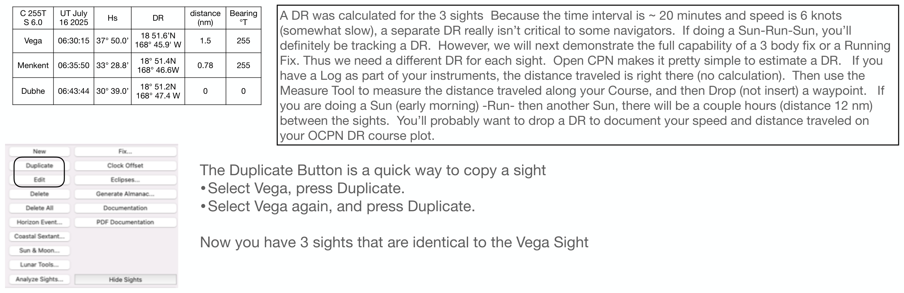

Full-size illustration. Scroll to inspect the details.

C 255T
Bearing
S 6.0
UT July 16 2025 Hs DR distance
(nm)
°T
Vega 06:30:15 37° 50.0’ 18 51.6’N 168° 45.9' W 1.5 255
Menkent 06:35:50 33° 28.8’ 18° 51.4N 168° 46.6W 0.78 255
Dubhe 06:43:44 30° 39.0’ 18° 51.2N 168° 47.4 W 0 0
A DR was calculated for the 3 sights Because the time interval is ~ 20 minutes and speed is 6 knots (somewhat slow), a separate DR really isn’t critical to some navigators. If doing a Sun-Run-Sun, you’ll definitely be tracking a DR. However, we will next demonstrate the full capability of a 3 body fix or a Running Fix. Thus we need a different DR for each sight. Open CPN makes it pretty simple to estimate a DR. If you have a Log as part of your instruments, the distance traveled is right there (no calculation). Then use the Measure Tool to measure the distance traveled along your Course, and then Drop (not insert) a waypoint. If you are doing a Sun (early morning) -Run- then another Sun, there will be a couple hours (distance 12 nm) between the sights. You’ll probably want to drop a DR to document your speed and distance traveled on your OCPN DR course plot.
The Duplicate Button is a quick way to copy a sight •Select Vega, press Duplicate. •Select Vega again, and press Duplicate.
Now you have 3 sights that are identical to the Vega Sight